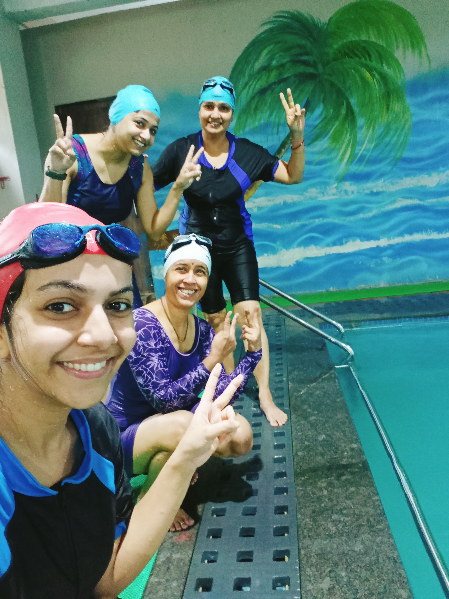

Here are some of the many benefits of swimming:--
Improves cardiovascular health
Swimming is a great cardiovascular exercise that can improve your overall heart health. It increases your heart rate, strengthens your heart muscle, and improves your circulation.
Builds muscle strength
Swimming engages all of your major muscle groups, including your arms, legs, back, and core. It’s an excellent way to build strength and tone your body.
Reduces stress
Swimming is a great way to reduce stress and anxiety. It’s a low-impact exercise that can help you relax and unwind.
Improves flexibility
Swimming is a great way to improve your flexibility. It’s a low-impact exercise that can help you stretch and lengthen your muscles.
Burns calories
Swimming is a great way to burn calories and lose weight. It’s a low-impact exercise that can help you maintain a healthy weight.
Swimming Partners---
